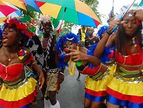
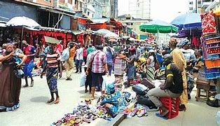

Featured Events

Lagos Cultural Festival
Date: December 20, 2024 | Location: Freedom Park, Lagos Island
Celebrate the rich cultural heritage of Lagos with music, dance, and art exhibitions.

Lagos Trade Fair
Date: January 15, 2025 | Location: Tafawa Balewa Square
Join the largest trade fair in Lagos and explore a variety of local and international products.
Farmers Market Meetup
Date: February 5, 2025 | Location: Lekki Market
Connect with local farmers and learn about sustainable agricultural practices.
Artisan Workshop
Date: March 12, 2025 | Location: Balogun Market
Learn traditional crafts and techniques from experienced artisans in Lagos.